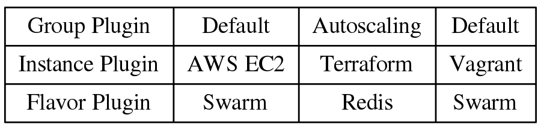

class: title, inverse New kits on the block ## SwarmKit & InfraKit ??? - 제목은 오래된 팝그룹 New kids on the block에서 차용했습니다 - 제목의 의미는 세상에 나온지 얼마 안되었다는 의미인데요 - 개인적인 의견으로는 아직 프로덕션에 적용하기에는 무리가 있어보이지만 - 미래 가능성? 이 있어 보이는 오픈소스 프로젝트이라고 생각합니다 - 사실 이런 자리는 사용해보고 얻은 경험치를 가지고 이야기를 해야 하는데 - 저도 프로덕션에 적용해보고 이야기하는 것은 아니라서 - 많은 이야기를 하기 힘들것 같지만, swarmkit이나 infrakit에 소개 이야기가 될것 같습니다 --- class: title # SwarmKit ??? - docker swarm 이라고 docker remote api 기반으로 cluster project가 있었습니다 - 하지만 저번 docker con에서 새로운 클러스터링을 발표하는데요. 그것이 swarmkit 입니다 - 애플처럼 kit이라는 단어를 도커도 좋아하는데요. docker for mac 사용하시면 잘 아실 vpnkit이라든가 datakit이라든가. - swarmkit을 사용한 docker engine 모드를 swarm mode라고 하고 그냥 우리가 사용하는 모드를 - 클래식 모드라고 합니다 - 결국 도커는 docker swarm standone과 docker swarm mode 두개의 클러스터링 도구를 가지고 있는데요 - 지금 봐서는 docker swarm standone은 deprecated되고 docker swarm mode으로 가는 것 같습니다 --- # SwarmKit - 멀티 노드 시스템을 위한 오픈소스 클러스터 툴킷 - 도커 엔진(Docker Engine) >= 1.12 (Docker swarm mode) - 외부 데이터 스토어가 필요 없음 (자체 내장) (mesos -> zookeeper, k8s -> etcd) - 노드간 자동으로 보안 키 공유와 갱신(TLS)으로 노드 인증 - DNS기반 서비스 디스커버리(Service discovery) - 로드 밸런싱(Load balancing) - SwarmKit/swarmd/swarmctl → libcontainer/containerd/container-ctr ??? - 도커 엔진에 장착된것은 장점 (설치할게 없다) - 쿠베르네테스와 차이는 장기적으로는 피쳐 차이보다는 설계 구조에서 기인한다고 생각. 스웜이 좀더 모놀리식 구조입니다. - 쿠베르네테스은 설치가 스윔에 비해 복잡할수는 있어도 컨포넌트 구성이나 변경이 플렉서블하다고 생각 - 스윔은 레이어드 구조로 확장을 하거나 (스윔을 사용하는 도구를 만들거나) - 도커 엔진처럼 plugin으로 열어준 부분만 변경하거나 예를 들어 도커 엔진의 볼륨이나 네트웍 드라이버처럼 - 도커의 설계는 좀더 프레임워크적인,모놀리식(단일형) 구조이긴 합니다 - 장점은 클러스터 구성이 쉽다는 점입니다. 그리고 자체적으로 로드밸런서를 가지고 있는 점이겠네요 - 사실 도커 엔진 1.12이상만 설치되어 있으면 클러스터를 위한 기본 디폴로이가 되어 있다고 봐도 무방 - 메소스는 주키퍼를, 쿠베르네테스은 etcd를 가지고 있는데, 도커 스윔 모드는 내부적으로 분산 상태 스토어를 가지고 있습니다 - 사실 이 구조도 일장일단이 있습니다. etcd나 zookeeper가 밖에 있으면 애플리케이션에서도 커스텀하게 사용할수 있으니까요. 스웜의 스토어에 접근할수 있는 방법은 지금은 클러스터나 서비스의 라벨으로 저장하는 방법인데요. 이슈를 보면 일반적인 저장소로 쓸수 있도록 api를 만들자라는 이야기가 있긴 합니다 --- layout: true # Swarm mode .console[ ```bash $docker swarm init ``` ] ??? - 처음 init된 엔진은 매니저가 됩니다 --- <div class="center"> <p> <img src="swarm-mode-1.dot.png" /> </p> </div> --- layout: true # Swarm mode .console[ ```bash $docker swarm join --token $TOKEN $MANAGER_IP:PORT ``` ] ??? - 토큰은 조인-토큰이라고 하는데,스웜 클러스터 생성(swarm init)할때, 매니저 조인 토큰이랑 워커 조인 토큰 두개가 생성됩니다 - 각 도커 엔진에서 이렇게 조인을 해서 클러스터가 구성됩니다 --- <div class="center"> <p> <img src="swarm-mode-2.dot.png" /> </p> </div> --- <div class="center"> <p> <img src="swarm-mode-3.dot.png" /> </p> </div> --- layout: false # Swarm architecture  ??? - 이렇게 클러스터가 구성되면, 다음과 같은 구조로 만들어 집니다 - 아까 말씀드린것 처럼, 외부적인 스토어가 필요 없는 대신, 상태의 일관성을 여러 노드에서 가지기 위해 래프트(Raft) 컨센서스 기반의 분산 상태 스토어를 매니저 노드끼리 가지게 됩니다 - 분산 스토어는 Etcd나 Zookeeper과 같은 방식이죠 (사실 내장했다고 보면 좋을듯 합니다) - 워커노드는 상태 스토어 정보를 공유하지는 않지만, 워커 노드끼리는 가쉽프로토콜로 서비스의 네트웍정보를 서로 공유하게 됩니다 (빼도 됌) - 내부적인 커뮤니테이션은 모두 gRPC기반으로 동작하구요 --- layout: false # Demo - dind (docker in docker)를 사용해서 워커 노드(worker nodes)을 만듬 .console[ ```bash SWARM_TOKEN=$(docker swarm join-token -q worker) SWARM_MASTER=$(docker info | grep -w 'Node Address' | awk '{print $3}') NUM_WORKERS=3 for i in $(seq "${NUM_WORKERS}"); do docker run -d --privileged --name worker-${i} \ --hostname=worker-${i} -p ${i}2375:2375 docker:1.12.3-dind sleep 2 docker --host localhost:${i}2375 swarm join --token ${SWARM_TOKEN} ${SWARM_MASTER}:2377 done ``` ] ??? - 도커 컨테이너안에서 도커 엔진을 실행할수 있는데요. 대개 이런 방식은 도커 테스트하거나 할때 많이 사용하는데요 - 간단한 데모를 위해서 도커 dind 으로 워커 컨테이너를 띠우고 - docker swarm join 도커 스웜 조인을 날려서 클러스터를 만듭니다 - `docker-compose up` --- # Service,Task - Service는 Swarm cluster에서 실행될 Tasks을 정의 - Service = image + command - Task는 한 노드에서 실행되는 작업 단위 # Node - Docker engine이고, Swarm cluster의 멤버 - Manager node과 Worker node으로 구분 - Manager node도 Task을 받아서 Service을 실행할수 있다 - Manager node는 Worker nodes에서 실행될 Task와 Node 정보를 관리 ??? - 스웜에서 서비스는 클러스터에서 실행될 태스크들을 정의하는 단위입니다 - 우리가 컨테이너를 실행하는 api나 커맨트말고 따로, 컨테이너라는 개념보다는 좀더 선언적인 개념으로 서비스라는 단위를 만들어야 하는데요 - 서비스는 스웜 매니저에서 해당 노드들에서 실행되어야 하는 태스크를 만들고 각 워커는 받은 태스크를 가지고 일을 합니다 - 맞는 설명인지 모르겠는데, 서비스가 일종의 클래스라면 태스크는 클래스의 인스턴스가 될수가 있죠? - 스웜 모드에서 노드는 도커 엔진 하나, 스웜 클러스터의 멤버를 말합니다 - 노드는 매니저 노드랑 워커 노드로 구분되는데, 매니저 노드로 서비스를 받아서 실행할수 있습니다 --- # Service - Replicated service과 Global service으로 구분 .console[ - Service 생성 ```bash $docker service create --name ping --replicas 2 alpine ping 8.8.8.8 ``` - Service 상태 ```bash $docker service ps ping ``` ] ??? - 서비스는 글로벌 서비스랑 리플리케이티드 서비스로 나눕니다 - 글로벌 서비스는 모든 노드에 하나의 태스크(컨테이너가) 동작하게 됩니다.(예를 들어 매트릭 에이전트) - 리플리케이티드 서비스는 우리가 선언한 태스크 수만큼 생성되게 됩니다 - `docker service create --name nginx --mount type=bind,source=/etc/hostname,target=/usr/share/nginx/html/hosts nginx` --- # Service Constraints .console[ - 라벨을 가지고 서비스가 실행될 노드 선택에 제한을 줄 수 있다 ```bash $docker service create --constraint="node.labels.security == high" ... ``` - 노드(Node) 라벨은 다음과 같이 관리할 수 있다 ```bash $docker node update --label-add security=high $NODE_ID_OR_NAME ``` ] - https://docs.docker.com/engine/reference/commandline/service_create/#specify-service-constraints---constraint ??? - `docker service update --constraint-add="node.role==worker" nginx` - `docker service scale nginx=3` --- # Load balancing - 외부 로드 밸런싱(External Load Balancing) - Routing Mesh - 내부 로드 밸런싱(Internal Load Balancing) - Virtual IP - `ip_vs`, `iptables` ??? - 스웜은 로드 밸런서가 있습니다. Virtual IP을 하나 생성하고,해당 Virtual IP으로 접속하면 서비스에 상태가 활성화된 컨테이너중 하나로 연결됩니다. 쿠베의 클러스터 IP랑 비슷하다고 보시면 됩니다 - 라우팅 매쉬라는 외부 로드 밸런서와 연결할때 사용할수 있습니다 - 스웜의 로드 밸런싱은 리눅스 커널의 ipvs와 iptable을 사용합니다 (user-mode proxy가 아닙) --- # Routing mesh : Publishing ports .console[ ```bash $docker service create --name my-web \ --publish 8080:80 \ --replicas 2 \ nginx $docker network ls NETWORK ID NAME DRIVER SCOPE e73a26ef806e bridge bridge local 62e5259bafc4 docker_gwbridge bridge local 1e101ab8b2da host host local 68lukwj0iddg ingress overlay swarm ``` ] ??? - 간단하게 말해서 우리가 컨테이너 포트를 호스트 포트에 바인딩하듯이, 스웜모드에서는 서비스의 포트를 모든 호스트의 포트로 바인딩한다고 보시면 됩니다 - `docker service update --publish-add 80:80 nginx` - `curl localhost:80/hostname` --- # Routing mesh : Publishing ports  --- # Routing mesh : Publishing ports  ??? - AWS의 ELB등에 노드상관없이 클러스터의 모든 노드를 추가하면 됩니다 --- # Virtual IP .console[ ```bash $ docker service inspect \ --format='{{json .Endpoint.VirtualIPs}}' \ my-web [{"NetworkID":"7m2rjx0a97n88wzr4nu8772r3" "Addr":"10.0.0.2/24"}] ``` ] - `--endpoint-mode vip` 이면, 서비스(Service)의 Virtual IP을 생성됨 (default) - VIP는 서비스 이름으로 DNS에 추가됨 - 가쉽 프로토콜(Gossip protocol)기반으로 스윔(Swarm)안의 컨테이너(Container)가 VIP,DNS 정보를 공유 - `HEALTHCHECK --interbal=3s --timeout=1s CMD curl -f http://localhost:5000/ || exit 1` - DNSRR(DNS Roundrobin)도 지원 `--endpoint-mode dnsrr` ??? - HEALTHCHECK 헬스체크는 도커1.11?에서 도커파일에 추가된 구문인데요. 아직 도커 1.12은 핼스체크로 OK된 노드로만 보내는지는 못하는 것 같고 1.13에서는 컨테이너 상태랑 서비스 상태가 싱크가 되어서 HEALTHCHECK로 OK된 컨테이너로만 로드 밸런서가 동작하게 됩니다 --- # DNSRR & DNS based Service discovery - http://prometheus.io dns_sd_configs ```yaml - job_name: 'cadvisor' dns_sd_configs: - names: - 'tasks.cadvisor' type: 'A' port: 8080 - job_name: 'node-exporter' dns_sd_configs: - names: - 'tasks.node-exporter' type: 'A' port: 9100 ``` ??? - DNS 기반 서비스 디스커버리 이야기인데요 - 아직 스웜이 DNS의 SRV 레코드를 지원하진 않습니다 (곧 하겠죠?) - tasks.서비스 으로 컨테이너 안에서 조회하면 도커 엔진안의 임베디드 DNS 서버에서 해당 컨테이너 IP를 리턴합니다 - 임베디드 DNS는 도커 1.11부터 추가된 --- # Next - Cluster volume plugin : NFS,Flocker,infinit... - Pluggable scheduler : https://github.com/docker/swarmkit/issues/1412 (What components of Swarmkit (swarm 1.12) are pluggable?) - `--network host` : https://github.com/docker/swarmkit/issues/989 (Do we want to allow services to use the host's network namespace?) - Scheduler Rebalancing : https://github.com/docker/swarmkit/issues/310 - Elastic autoscaling : https://github.com/docker/swarmkit/issues/1663 - Built-in Log Management : https://github.com/docker/swarmkit/issues/1332 - API: Events stream : https://github.com/docker/swarmkit/issues/491 - DAB & `docker deploy ` ??? - 뭔가 많군요 - 아직 이슈로 올라오고 구현되지 않는 부분들인데요 - 아직 스케줄려가 스프릿 스케줄러 하나만 있고 플러그인으로 되어 있지 않고 - 오버레이 네트웍으로만 사용가능해서 호스트 매핑에 대한 부분도 - 그리고 노드가 추가되더라도 스케줄러가 현재 상태가 런닝인 태스크들은 다시 리밸랜싱을 하지 않는데요. 이건 1.13에서 처리되기를. - 아직 도커 로그 커맨트처럼 도커 서비스 로그가 없고요 (1.13에 추가될것 같은데,실험적 버젼만 동작할지도 모르겠네요) - 일레스틱 오토스케이링은 말그대로 우리가 AWS나 클라우드에서 제공하는 기능 말하는 건데요 - 예를 들어 CPU 80%이면 태스크수를 몇분에 몇개씩 최대 몇개까지 늘려라.. 이런건데 - 직접 제공하진 않을것 같고, swarm api으로 할수 있는 방식으로 갈것 같습니다 - api 이벤트 스트림은 도커 엔진 이벤트 api처럼 스웜 이벤트를 받을수 있는 방식을 말합니다 이런게 있어야지 스웜 기반으로 무언가 만들기 좋겠죠 - DAB(분산 애플리케이션 번들)은 도커 컴포즈 파일을 json으로 만들어서 도커 디폴로이 커맨드로 던지면 스웜 서비스들이 생성되고 기능인데요. 아직 실험적인 도커버젼에서만 동작하고 안정화버젼에는 없습니다 --- layout: false class: title,inverse # Infrakit --- # Infrakit - 인프라스트라쳐 오케스트레이션 (Infrastructure orchestration) 툴킷 - Plugin API 구조 - Terraform이나 ansible 처럼 구성관리(Configuration management) 도구는 아님 (플러그인으로 사용가능) - 선언적인 상태(Declarative state) - 지속적인 모니터링 및 조정(Continuous monitoring and reconciliation(crontab?)) --- # Plugins - 인스턴스(Instance) : 리소스(Resource) (예: EC2 instance) - `provision`, `destory` - 그룹(Group) : 리소스 그룹 (예: AutoScalingGroup , Instance Group) - `commit`, `free` , `destory`, `update` - 플레이버(Flavor) : 인스턴스의 변화 (예: Swarm join) - `preapre`, `health`, `drain` --- # Plugins Example <div class="center"> <p style="width:80%;">  </p> </div> --- # Configuration ```json { "Plugin": "", "Properties: {...} } ``` --- # Configuration - Nginx Group ```json { "ID" : "nginx", "Properties" : { "Allocation" : { "Size" : 3 }, "Instance" : { "Plugin" : "instance-vagrant", "Properties" : { "Box" : "ubuntu-docker" } }, "Flavor" : { "Plugin" : "flavor-vanilla", "Properties" : { "Init" : "docker run -d -p 80:80 nginx" } } } } ``` --- # Demo .code[ ```bash $./infrakit-group-default INFO[0000] Listening at: /Users/anarch/.infrakit/plugins/group ``` ```bash $./infrakit-flavor-vanilla INFO[0000] Listening at: /Users/anarch/.infrakit/plugins/flavor-vanilla ``` ```bash $./infrakit-dind INFO[0000] Listening at: /Users/anarch/.infrakit/plugins/instance-dind ``` ```bash $~/tools/infrakit/infrakit group commit ./infrakit-vanilla-dind.json Committed swarm-dind: Managing 3 instances ``` ] --- # Demo ```json { "ID": "swarm-dind", "Properties": { "Allocation": { "Size" : 3 }, "Instance": { "Plugin": "instance-dind", "Properties": { "Name": "worker", "HostName" : "worker" } }, "Flavor": { "Plugin": "flavor-vanilla", "Properties": { "Init": [ "docker swarm join --token SWMTKN-1-3cfnsnumc4ptz1ame7rac2dgq4atklr9nza6amux438jkd02g9-csb58zcltq94m5uf7q2im4dvi 192.168.65.2:2377" ] } } } } ``` --- # Design Goal  --- class: title, inverse 감사합니다! <pre> mailto: anarcher@gmail.com </pre>